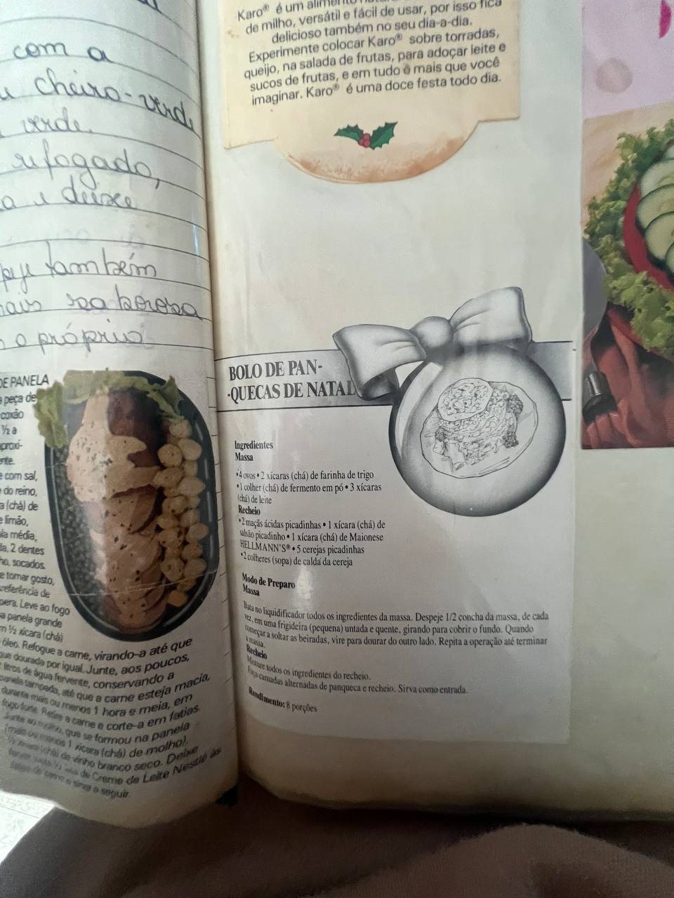

Salgados
Bolo de panquecas de Natal
Massa
- 4 ovos
- 2 xícaras (chá) de farinha de trigo
- 1 colher (chá) de fermento em pó
- 3 xícaras (chá) de leite
Recheio
- 2 maçãs ácidas picadinhas
- 1 xícara (chá) de salsão picadinho
- 1 xícara (chá) de maionese Hellmann's
- 5 cerejas picadinhas
- 2 colheres (sopa) de calda da cereja
Modo de preparo
- Bata no liquidificador todos os ingredientes da massa.
- Despeje ½ concha da massa, de cada vez, em uma frigideira pequena, untada e quente, girando para cobrir o fundo.
- Quando começar a soltar as beiradas, vire para dourar do outro lado. Repita a operação até terminar a massa.
- Misture todos os ingredientes do recheio.
- Faça camadas alternadas de panquecas e recheio. Sirva como entrada.
Foto da receita
